Correctness work on path-bool
Every defect below produced a wrong answer silently — no exception, no warning, just an incorrect region. Most were found by a generated fixture corpus added at the start of this branch, checked against three independent oracles. Two were found only because a fix for one defect exposed another underneath it.
Summary
| Defect | Trigger | Symptom |
|---|---|---|
| Order dependence | Two inputs sharing a collinear edge | Intersection returned a whole input shape when the arguments were swapped |
| Tangency abort | Two curves touching at a point | Every operation failed |
| float32 truncation | Any rotated arc | ~9 digits lost; tangent circles merged into one |
| Degrees as radians | Any rotated arc | Wrong geometry; one case 500× slower |
| Angle ill-conditioning | Repeated curve subdivision | Error grew to 2% by depth 25; heavy slowdown throughout |
| Arc bounds ignore rotation | Arc spanning an axis extreme | Bounds up to 20× too large, and could omit part of the arc |
| Cubic bounds miss extremes | Any symmetric cubic | Bounds excluded the curve's own apex |
| Loops read as degenerate | Self-intersecting path | The loop was invisible to intersection |
| Fixed tolerances | Drawing smaller than ~50 units | Output loops left open; areas off by 0.4% |
| Repeated crossing reports | Curves meeting at a shallow angle | 146 intersections where 8 exist; 54 degenerate faces |
Performance
Measured on the production bundle, best of five runs per operation, all six operations per fixture. The real-world set is the 25 hand-made fixtures that predate this branch — ordinary icon and logo artwork, unchanged by the work.
- Real-world set, total
- 508.8 ms → 497.6 ms (0.98×)
- Per-fixture, geometric mean
- 1.03× — a 3% median slowdown
- Failures
- 0 before, 0 after
Net cost on ordinary content is negligible. The additional work per crossing is offset by a much better-conditioned angle computation, which reduced subdivision depth across the board. Individual fixtures move in both directions.
| Fixture | Before (ms) | After (ms) | Ratio |
|---|---|---|---|
| real-02 | 228.69 | 224.12 | 0.98 |
| nesting-05 | 144.87 | 133.70 | 0.92 |
| real-01 | 39.19 | 35.05 | 0.89 |
| simple-04 | 11.03 | 11.21 | 1.02 |
| dangling-01 | 9.40 | 10.18 | 1.08 |
| nesting-03 | 8.31 | 9.63 | 1.16 |
| simple-03 | 8.09 | 9.83 | 1.22 |
| dangling-02 | 7.14 | 8.08 | 1.13 |
| simple-01 | 5.72 | 6.54 | 1.14 |
| simple-08 | 5.54 | 4.87 | 0.88 |
| nesting-01 | 5.07 | 5.60 | 1.11 |
| simple-06 | 5.01 | 6.56 | 1.31 |
| dangling-04 | 4.65 | 5.32 | 1.14 |
| simple-05 | 4.57 | 5.27 | 1.15 |
| nesting-02 | 4.10 | 4.26 | 1.04 |
| real-03 | 3.87 | 4.14 | 1.07 |
| simple-07 | 3.69 | 4.00 | 1.09 |
| nesting-04 | 2.84 | 2.63 | 0.93 |
| dangling-03 | 2.58 | 2.52 | 0.98 |
| touching-02 | 1.14 | 0.93 | 0.82 |
| degenerate-02 | 1.10 | 1.05 | 0.96 |
| degenerate-03 | 0.81 | 0.59 | 0.73 |
| simple-02 | 0.67 | 0.59 | 0.87 |
| touching-01 | 0.46 | 0.76 | 1.65 |
| degenerate-01 | 0.20 | 0.16 | 0.82 |
| Total | 508.8 | 497.6 | 0.98 |
Extremes
Outside ordinary artwork the changes move performance sharply in both directions.
| Case | Before | After | Note |
|---|---|---|---|
| Rounded rect × rotated ellipse | 1084 ms | 2.2 ms | 493× faster, and the answer was wrong before |
| Circle × its cubic approximation | 123 ms | 649 ms | 5.3× slower, and the answer was garbage before |
The second is a deliberate trade. That case previously produced 54 zero-area faces in 123 ms; it now produces the correct 9 faces in 649 ms. The extra time is spent resolving crossings between two curves that run within a whisker of each other along their whole length. It remains the one known-slow case and is tracked as such.
Defects
1 · Swapping the inputs changed the answerd86ea91
Where two inputs shared part of a boundary, the result depended on argument order. Two 2×2 squares meeting along an edge: intersection was correctly empty one way round, and returned an entire input square the other. Union and difference agreed both ways, which is why the hand fixtures never caught it.
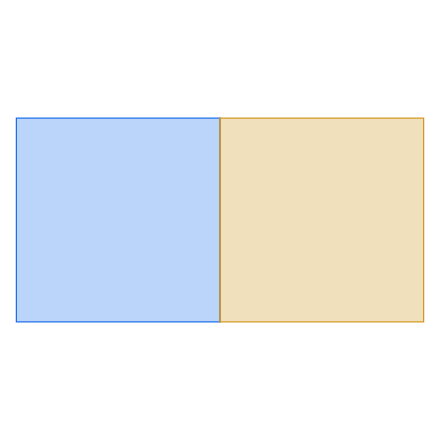
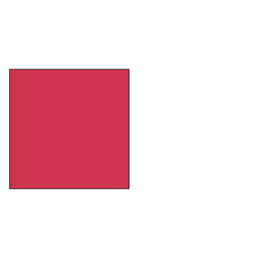
intersection(B, A). The squares meet along an edge and share no area, so the
result must be empty. Exclusion was affected the same way: 4 instead of 8.
2 · Curves touching at a point aborted the operatione98f1bc
Two circles tangent at a single point failed every operation — externally or internally tangent, at any position or scale. Tangency is common in real artwork: fillets, inscribed shapes, anything constructed by snapping.
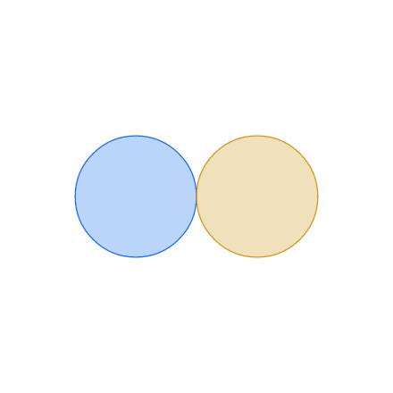

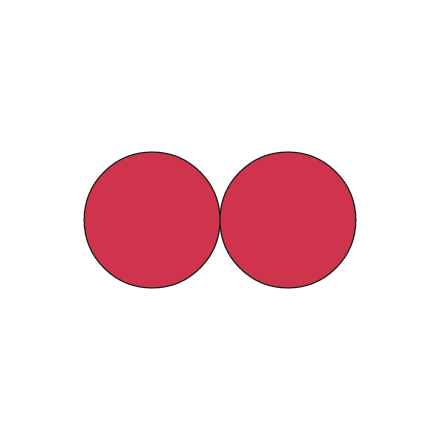
3 · Arc geometry was truncated to float32b0f091a
Matrices came from a library that allocates single precision by default, costing roughly nine digits on every arc. An unrotated arc is unaffected, so this stayed hidden. A rotated arc no longer passed through its own stated endpoint, missing it by ~1.7e-8 — enough to make two tangent circles merge into one.
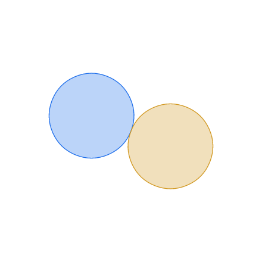
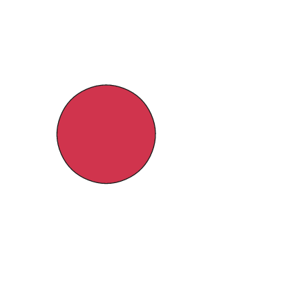
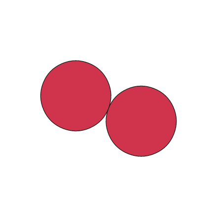
4 · Rotated arcs were sampled in the wrong units44bb7c4
Two places passed a rotation in degrees to routines expecting radians, so an arc at 30° was placed as though rotated by 30 radians. Sampling and splitting a rotated arc returned points that were not on the curve. Both sites carried a comment suspecting the sign; the defect was the unit.
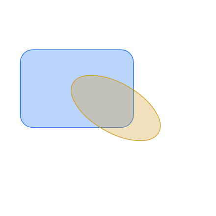
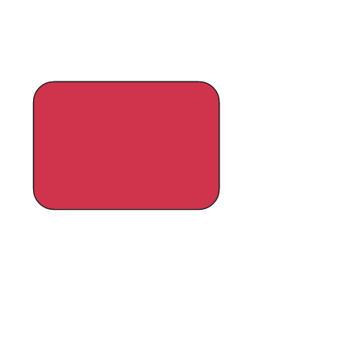
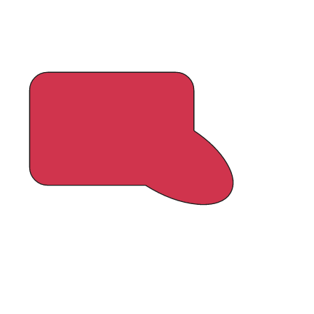
The same defect made rotated circles that plainly overlap come out disjoint — sampling placed each on its own circle but at the wrong angle.
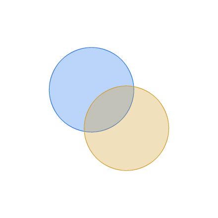

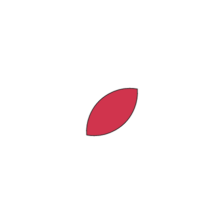
5 · Angle recovery was ill-conditionedce2e76a
Angles were recovered with a function whose relative error grows as the angle shrinks. Curve subdivision re-derives these at every level, so the error compounded: halving a quarter circle, the recovered sweep was off by 1.4e-8 at depth 15 and 1.9e-2 at depth 25, and by depth 29 the recovery failed outright.
Beyond accuracy, bounds that stop shrinking stop the intersection finder pruning. Correcting this cut the full test suite from 205 s to 98 s — a tax that had been spread across every case, not just the two that were visibly slow.
6 · Arc bounds ignored the arc's own rotation3567f77
Bounds for a circular arc depended on how the arc was written rather than where it is. With identical geometry expressed at different rotations, the bounding box measured 0.74× the arc's chord at most angles but 8.8× at 45° and 20.2× at 135°. Over-large bounds only cost time; the same defect could also omit part of an arc, and a bound that misses part of a curve causes real crossings to be discarded silently. A randomised sweep found curve points up to 2.4 units outside their own bounds.
7 · Bounds excluded a symmetric curve's apexf4e27ad
Any cubic symmetric in one axis — an ordinary arch — had bounds covering only its endpoints. A randomised sweep: 0 of 2000 arbitrary cubics escaped their bounds, against 2000 of 2000 symmetric ones.
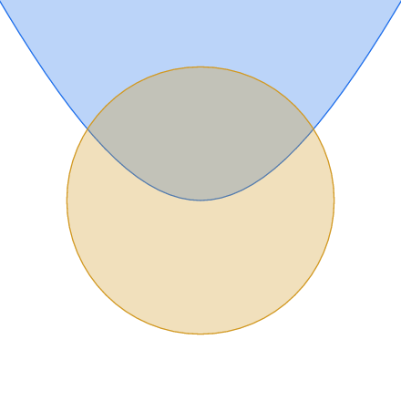

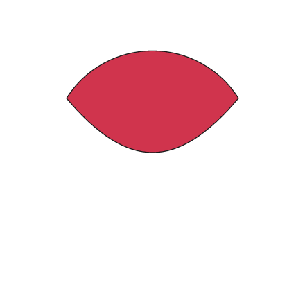
8 · A closed loop counted as a degenerate segment117070b
A curve whose endpoints coincide was treated as having no extent — but that is exactly what splitting a self-intersecting path at its crossing produces. The loop collapsed to a point everywhere: bounds, samples, and both halves when split.
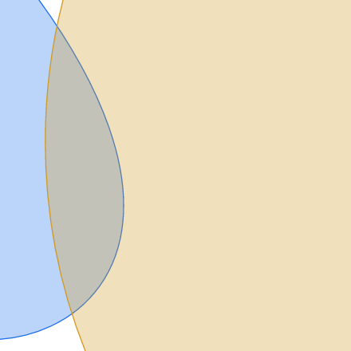

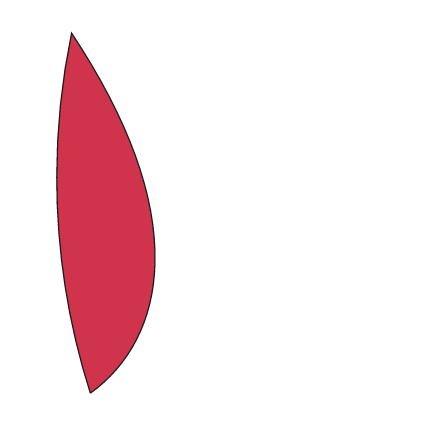
9 · Tolerances did not scale with the drawing8dc4cf9
The distance thresholds governing "same point" and "straight enough" were fixed constants, correct for a drawing about 50 units across — the size the hand fixtures happen to be. Shrink the same artwork and they stop working: curve subdivision halted while a chord still spanned much of its arc, and output loops were left open by most of the width of the scene.
- Intersection area at 1e-3 scale
- before 8.4369058e-7 · after 8.4718204e-7 · exact 8.4718800e-7 (0.41% error)
- Union area at 1e-3 scale
- before 5.4363355e-6 · after 5.4359731e-6 · exact 5.4359960e-6
Thresholds now scale down with the input, and only down: detail density does not follow drawing size, and scaling up broke a 900-unit fixture whose fine detail was swallowed. Results are now identical to every digit across a 215 range of scales.
10 · One crossing reported many times overb16dfbe · e971b4e
Where two curves meet at a shallow angle, the finder cannot separate the crossing from its surroundings and a whole run of neighbouring probes each report a hit. A circle against the cubic that approximates it produced 146 crossings where 8 exist. Each spurious one became a vertex, an edge, and finally a sliver face.
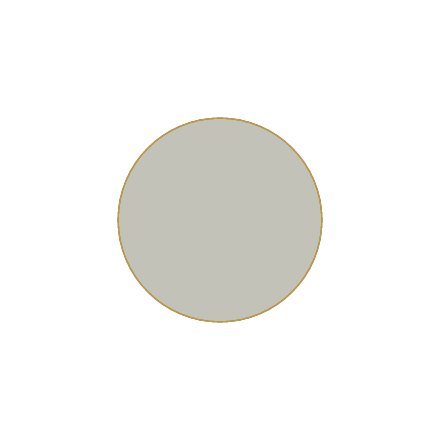
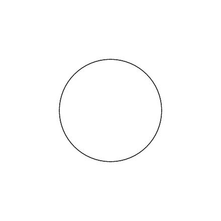

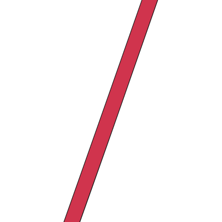
Collapsing the reports was not sufficient on its own. With the crossings correct, the contact still had to be pinned to where the curves actually touch, edges leaving a vertex in the same direction had to be ordered by curvature rather than by direction, and the outer boundary had to be identified by a measure that survives an outline thinner than the sampling. All three were required: with any one absent the case still lost faces.
Testing
The corpus added at the head of this branch is the reason these were found. It sits between the hand-made fixtures and the fuzzer: 55 generated cases, each existing for a nameable reason — a shape pair crossed with a placement that stresses one specific behaviour (tangency, shared edges, coincident vertices, fill rules, numeric conditioning).
The fixtures ship without expected output on purpose. Blessing the library's own output would freeze whatever bugs it already had, so each suite brings an independent oracle:
| Suite | Oracle | Catches | Blind to |
|---|---|---|---|
| Structural | none — shape only | crashes, hangs, open loops, non-determinism | anything well-formed but wrong |
| Algebraic | exact areas, identities between results | sub-pixel errors, order dependence | output that is consistently wrong |
| Raster | independent renderer, pixel set algebra | wrong regions, overlapping faces | features thinner than a pixel |
The complementarity was load-bearing, not theoretical. Order dependence was invisible to the raster oracle, which only ran arguments one way round — and that way happened to be correct. Conversely, when two overlapping circles were treated as disjoint, union and fracture were wrong in the same way, so every algebraic identity balanced and only the pixels gave it away.
Alongside the corpus, five property suites now assert invariants directly rather than pinning outputs: bounds contain their curve and are not much larger than it (arcs and cubics), results are invariant under scale, crossings are neither duplicated nor merged, and closed loops behave as curves. Each was verified to fail against the pre-fix code.
Known issue
One case remains listed. A circle against the cubic that approximates it now produces entirely correct geometry, but takes about 0.65 s per operation — the two outlines run within a whisker of each other along their whole length, so the finder subdivides its way down the entire arc. Recognising that two curves coincide within tolerance over a stretch, rather than bisecting along it, is the remaining work.